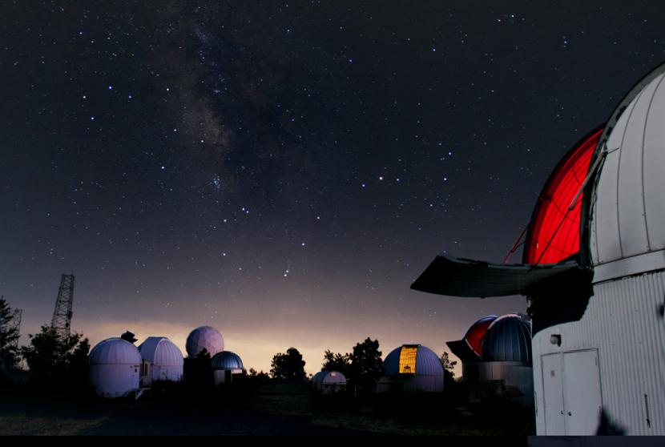
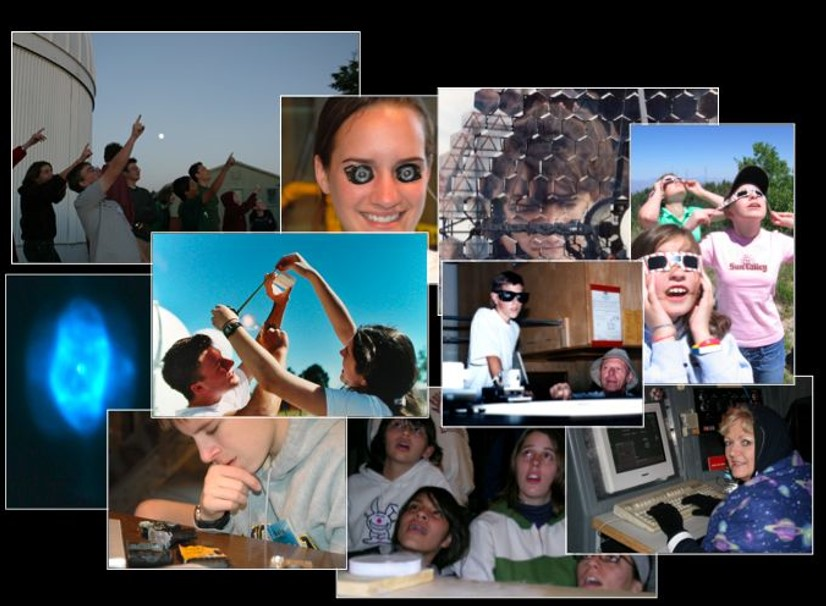
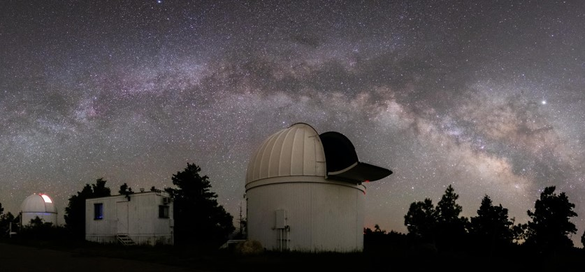
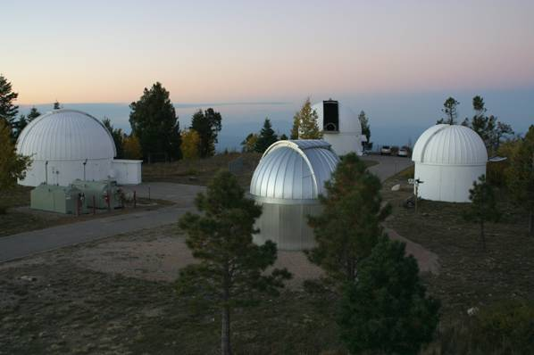
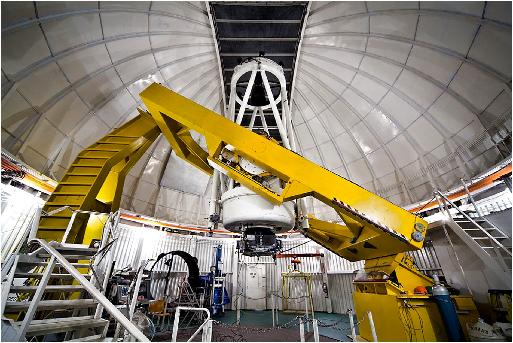
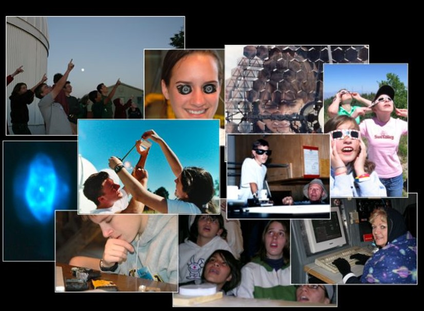
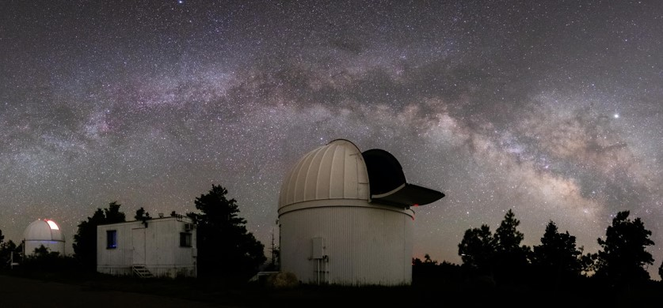
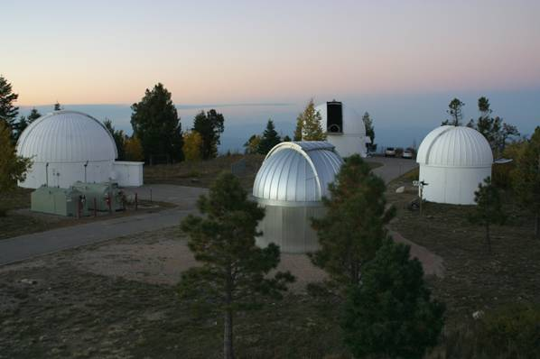
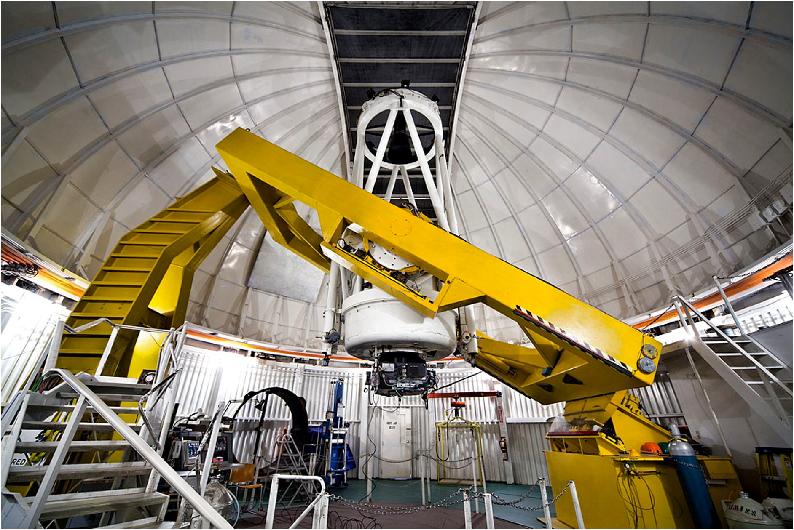
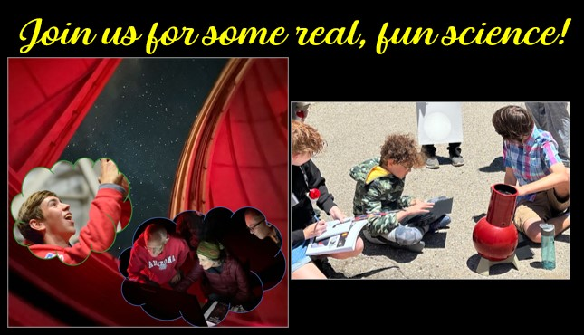

Need Information?
Astronomy Camp 2024

Dr. Don McCarthy
Astronomer & Director
Steward Observatory
The University of Arizona
933 N. Cherry Ave.
Tucson, AZ 85721-0065




{kind=link}
Dr. Don McCarthy
Astronomer & Director
Steward Observatory
The University of Arizona
933 N. Cherry Ave.
Tucson, AZ 85721-0065

{kind=link}

{kind=link}

{kind=link}

{kind=link}

As an Astronomy Camper you will explore the dark skies of Southern Arizona and experience the excitement of scientific inquiry. The "sky island" environment of Mount Lemmon Observatory immediately north of Tucson, Arizona, provides an inspirational residential setting. Since 1988, thousands of teenagers and adults have journeyed here worldwide to experience real astronomy, operating research-class telescopes and technology, interacting with leading scientists, interpreting their own observations, investigating their own questions and curiosities, and having fun.
We seek to promote a holistic understanding of science, quantitative thinking, and technology through hands-on, interactive explorations, leading to deeper understanding of Nature and career opportunities. Our staff of embedded professional mentors and Camp alumni inspires, prepares, and helps retain the next generation of leaders and scientists. We aim to grow our relationships to under-resourced groups and to provide ongoing support through scholarships, mentoring and post-Camp opportunities.
Each Camp is an "immersion" experience emphasizing a hands-on learning approach with activities driven by student engagement and interest. A prior background in astronomy is not required, nor is a connection with The University of Arizona. These science camps are available internationally to both teenagers and adults. Need-based scholarships are available!
Former Campers have earned advanced degrees in a wide variety of disciplines. Many others, including our staff, have become international leaders in their fields. Numerous publications describe the Camp experience, including personal accounts written by former Astronomy Campers. Astronomy Camp was the educational heart of a NASA proposal for the James Webb Space Telescope. The resulting 20-year partnership with the Girl Scouts of the USA, and later with the SETI Institute, created many hands-on STEM activities and new Space Science badges.
Parents often ask why the teen Astronomy Camps are so "life-changing." Educational research reveals several reasons:
{kind=link}
As an Astronomy Camper you will explore the dark skies of Southern Arizona and experience the excitement of scientific inquiry. The "sky island" environment of Mount Lemmon Observatory immediately north of Tucson, Arizona, provides an inspirational residential setting. Since 1988, thousands of teenagers and adults have journeyed here worldwide to experience real astronomy, operating research-class telescopes and technology, interacting with leading scientists, interpreting their own observations, investigating their own questions and curiosities, and having fun.
We seek to promote a holistic understanding of science, quantitative thinking, and technology through hands-on, interactive explorations, leading to deeper understanding of Nature and career opportunities. Our staff of embedded professional mentors and Camp alumni inspires, prepares, and helps retain the next generation of leaders and scientists. We aim to grow our relationships to under-resourced groups and to provide ongoing support through scholarships, mentoring and post-Camp opportunities.
Each Camp is an "immersion" experience emphasizing a hands-on learning approach with activities driven by student engagement and interest. A prior background in astronomy is not required, nor is a connection with The University of Arizona. These science camps are available internationally to both teenagers and adults. Need-based scholarships are available!
Former Campers have earned advanced degrees in a wide variety of disciplines. Many others, including our staff, have become international leaders in their fields. Numerous publications describe the Camp experience, including personal accounts written by former Astronomy Campers. Astronomy Camp was the educational heart of a NASA proposal for the James Webb Space Telescope. The resulting 20-year partnership with the Girl Scouts of the USA, and later with the SETI Institute, created many hands-on STEM activities and new Space Science badges.
Parents often ask why the teen Astronomy Camps are so "life-changing." Educational research reveals several reasons:
- Real scientists as mentors.
- A personal approach, treating youth as colleagues rather than children.
- Authentic scientific inquiry with realistic projects involving modern equipment.
- Student peers with common interests in science and engineering.
- A fun attitude toward learning, exploring ideas, and searching for answers.
- The aesthetic qualities of the "sky islands" of Southern Arizona with dark skies.
Home | Information | Registration | Articles | Links
All Images, Media and Content - Copyright © 2023 Astronomy Camp
Site Design by Jacob Omann. Maintained by Astronomy Camp. Updated Nov 29, 2023
All Images, Media and Content - Copyright © 2023 Astronomy Camp
Site Design by Jacob Omann. Maintained by Astronomy Camp. Updated Nov 29, 2023